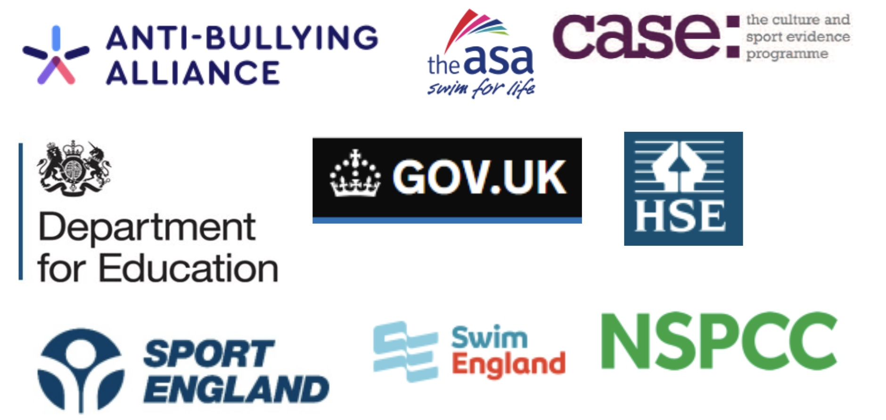

Research plays a crucial role in various aspects of our lives, including healthcare, education, technology, and social policy. One critical area where research is paramount is in safeguarding, particularly when it comes to child safety and protection in environments like sports clubs and centres. This information page highlights the importance of research in ensuring the safety of children in sports settings.
Research serves as a systematic process of investigation aimed at finding solutions to problems, expanding knowledge, and advancing our understanding of the world around us. When it comes to safeguarding in sports, research plays a vital role in identifying risks, developing best practices, and implementing effective measures to protect children from harm.
We have conducted in-depth research into the policies of the organizations below.
As part of our commitment to promoting child safety and protection in sports environments, we conducted a research initiative focused on better safeguarding practices in sports clubs and centres. Our research involved:
Through our research initiative, we uncovered valuable insights and identified key areas for enhancing child safety and protection in sports settings. Some of the key findings include:
We hope this information page provides a comprehensive overview of the importance of research in safeguarding children in sports environments. If you need more specific details or have any other questions, please contact us!
View the 2024 report on child sexual abuse.
We hope this information page provides a comprehensive overview of the importance of research in safeguarding children in sports environments. If you need more specific details or have any other questions, please contact us!
When conducting our research, we realised the extent of vulnerability was as predicted. Take a look at some examples of areas within the sport centres / health clubs shown. Can you identify what the cause of concern is here in terms of safe guarding?